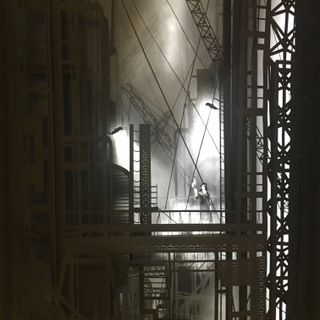

London Art Fair
Davy and Kristin McGuire
January 17 – 22, 2017

Winners of The Oxford Samuel Beckett Theatre Trust Award 2013, Davy & Kristin McGuire are multidisciplinary artists whose work has included The Icebook and an atmospheric stage adaptation of popular fantasy novel, Howl’s Moving Castle. Their latest award winning theatre production The Paper Architect premiered in July 2013 at the Barbican London. The McGuire’s critically acclaimed theatrical projects have been invited to tour to more than 13 different countries over 3 continents.
Davy and Kristin’s commercial commissions include the Floating City for Barneys’ iconic Madison Avenue Christmas windows, and Alchimie de Courvoisier, a bespoke paper diorama originally displayed at Harrods. Their renowned projection mapping installations have been exhibited, sold, published and screened internationally.
Davy’s background is in theatre and film whereas Kristin has trained as a dancer who has performed with many international companies including Cirque du Soleil, she is currently a dancer with the Mark Bruce Company.
TO RECEIVE A PDF WITH PRICING AND AVAILABLE WORKS PLEASE CONTACT US HERE